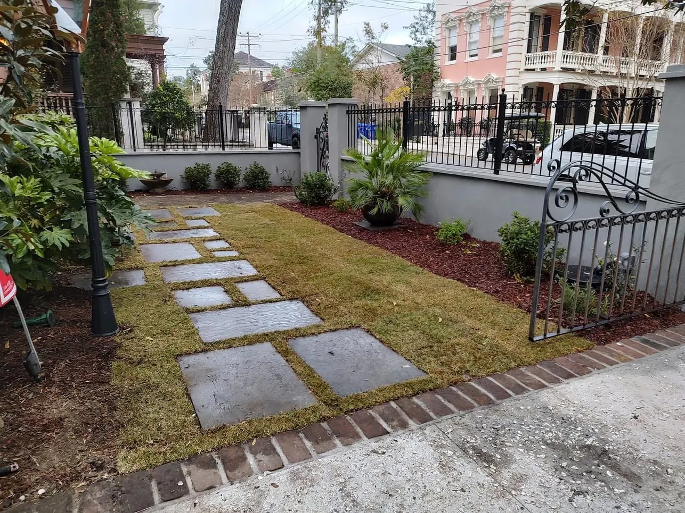

Landscaping & Outdoor Living in Charleston, SC

Local & Family-Run
Charleston Landscaping and Outdoor Living, From Downtown Courtyards to Live Oak Lots
Cramers Landscaping is a family company. Doug Cramer has spent more than 30 years building landscapes in the Lowcountry, and his son Zach is our licensed residential builder. Doug and Zach design every project themselves, and our own crew builds it.
We’ve worked in many different neighborhoods downtown and around the Charleston area. Charleston yards ask for very different things: a downtown courtyard needs every square foot to work, and a lot under live oaks needs care around the trees. The projects below are all real Charleston jobs.
A Downtown Yard That Stopped Flooding

This downtown Charleston homeowner had flooding problems. We took down her iron fence, built a stucco wall, and put the fence back on top of it. Then we modified her gates so she can seal them against water coming in.
We added a basin and a pump to move any water out of the yard, and finished by redoing the landscaping with turf, plants and mulch. The photo above, of the wall with the iron fence back on top, is the same property.
She still has us back to prune and to clean her fountains. We’re not a maintenance company, but we do come back for clients whose yards we built.
More on how we handle water: yard drainage.
Small Downtown Yards, Made Usable

A courtyard with a fountain
This is a small downtown yard, so the goal was to make it usable and low maintenance while still keeping some plants and landscaping. We poured tabby concrete with a brick border, set up a fountain and ran an automatic filler to it, and added landscape lighting, plants including the palm, a slatted fence and artificial turf.
For the same client we also fixed the metal gate, and repaired the common-area retaining wall after a delivery driver hit it.

A small backyard for a dog
Another downtown job: a small backyard made usable for the owners and their dog with artificial turf. We added bluestone stepping stones, cleaned up the beds and added some plants.
A New Front Yard Under the Live Oaks

This job involved building a new retaining wall that integrates seamlessly with the old one. We also laid bluestone and brick paving, poured a salt-void driveway and a salt-void entrance with a diamond pattern, and added gas lanterns, landscape lights, plants and mulch.
The whole front yard is artificial turf. What you don’t see is the irrigation, but it’s there.
All of it was built around live oaks. We were careful working near them and took extra precautions to make sure the trees stayed healthy through the whole process.

More Charleston Projects

A low-slope gable pavilion
This pavilion has a low-slope gable, which gives it an Arts and Crafts feel, blended with some modern materials: Hardie trim, a tile back wall and a stucco and concrete kitchen. The yard is tabby concrete with a brick border and artificial turf, planted with citrus trees in pots, loquat trees and Japanese maples.
Plants, lighting, brick and turf
Another Charleston property got extensive plantings, landscape lighting and a pavilion, with a brick herringbone patio, artificial turf in the backyard and zoysia in the front.

An elevated entrance
For one client we built the gates, the fence and the brick columns, turning a normal fence into an elevated entrance. We add a metal frame to the gates. Without one, a double gate bows and won’t sit perfectly in line over time.

Work for MUSC

Our focus is residential, but we also do a lot of work downtown for MUSC, mostly concrete and plants. The planting and sod in this photo is some of it.
What Projects Typically Cost
| Artificial turf | from $13 per sq ft |
|---|---|
| Paver or stone patio | from about $18 per sq ft |
| Poured concrete | about $12 per sq ft |
| Retaining wall | from about $50 per sq ft of wall face |
| Landscape lighting | about $200 a light, plus a transformer |
| Pavilion | $30,000 – $90,000+ |
Ranges are typical, not quotes. Size, materials, site conditions and finishes move the number. You’ll get an exact price after the consultation.
Frequently Asked Questions
Can you make a small downtown Charleston yard usable?
Yes. On the two small downtown yards on this page we used artificial turf, tabby concrete or bluestone stepping stones and kept some planting, so the space is usable and low maintenance without losing the garden.
My downtown yard floods. What can be done?
It depends on the property, so we look first. For one downtown homeowner we built a stucco wall under her iron fence, modified the gates so they can be sealed against water, and added a basin and pump to move water out of the yard.
Do you protect live oaks during construction?
Yes. On a Charleston job with a new retaining wall, driveway and front yard, we worked carefully around the live oaks and took extra precautions to keep them healthy through the whole process.
Do you build gates and fences?
We do. For one Charleston client we built the gates, fence and brick columns for an elevated entrance. We add a metal frame to double gates, because without one they bow and stop lining up over time.
Do you only work downtown?
No. We’ve worked in many different neighborhoods downtown and around the Charleston area, and the consultation is free.
Explore Everything We Build
From plantings and drainage to patios, pergolas and outdoor kitchens, see the full range of services we offer in Charleston and across the Lowcountry.
Talk to Doug or Zach About Your Yard
Tell us what you have in mind for your Charleston property, and we’ll set up a consultation at your home.